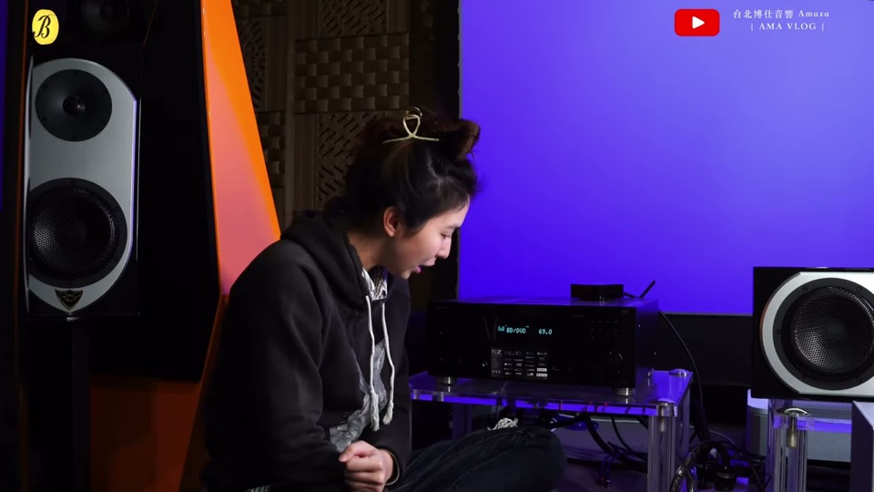
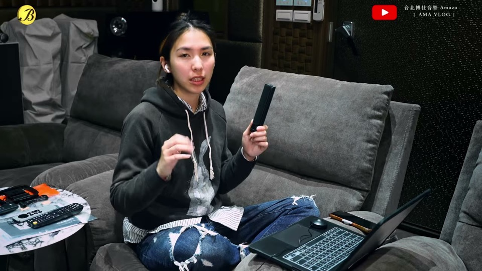
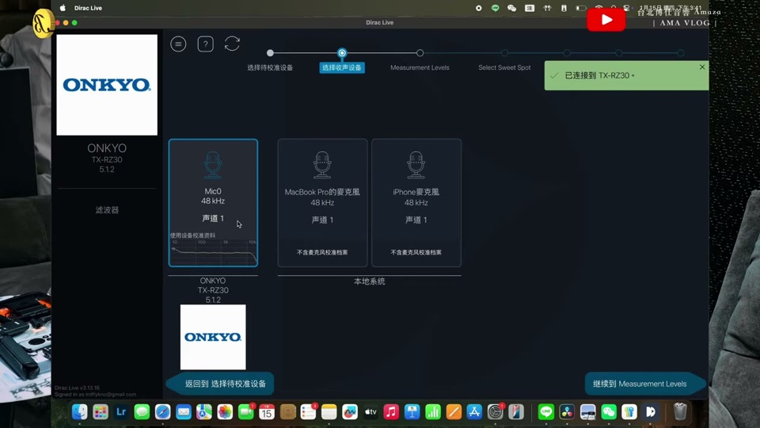
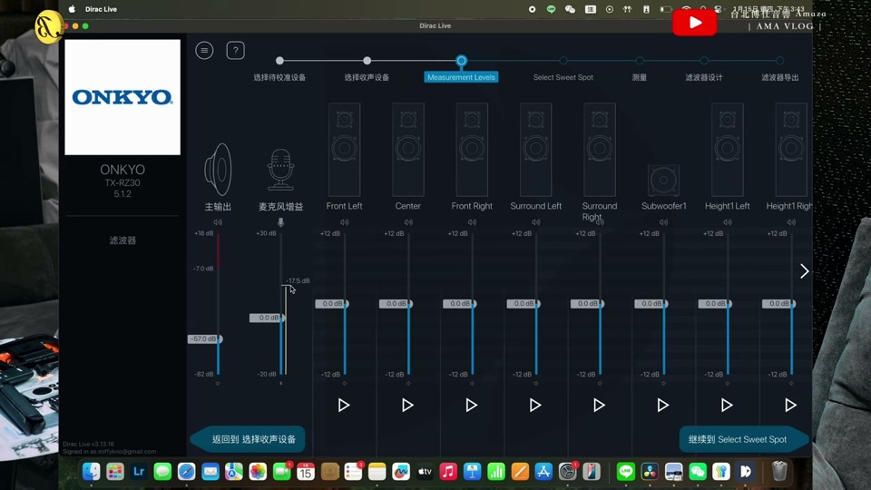
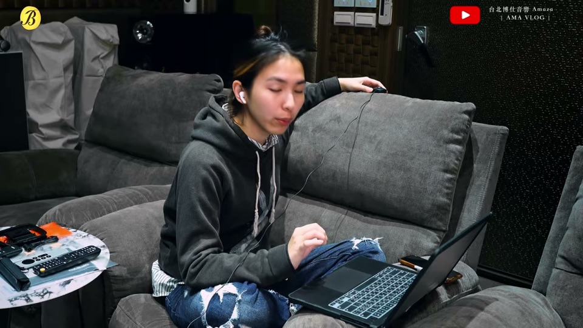
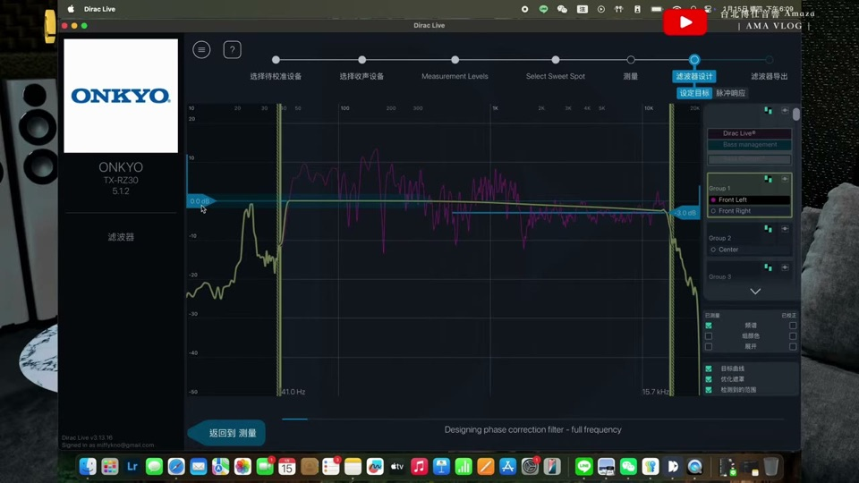
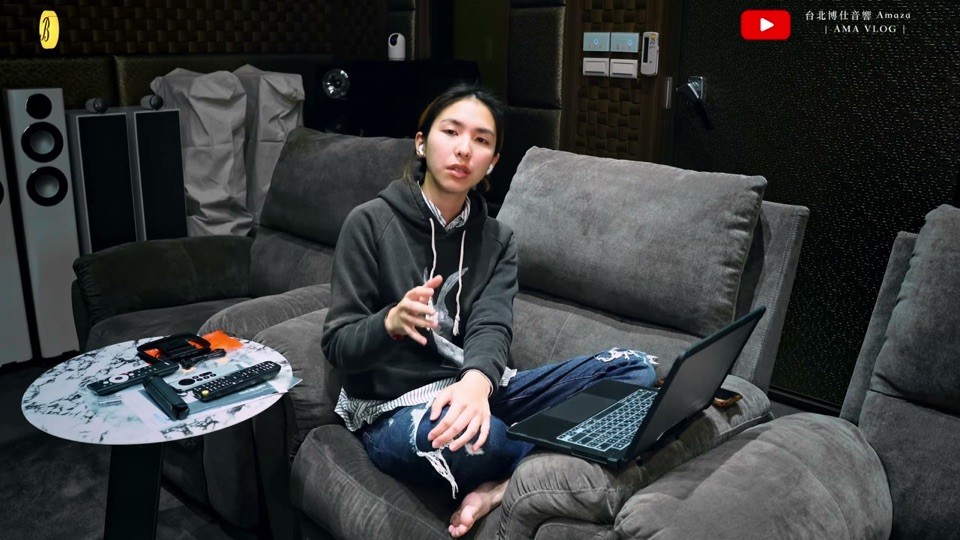
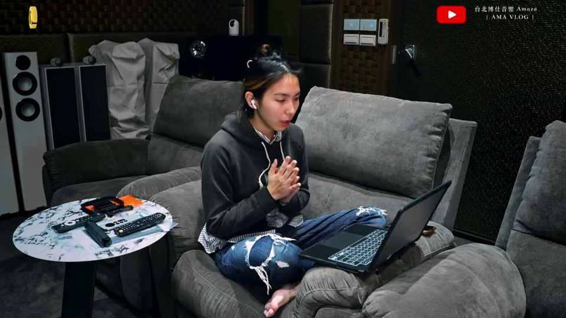

用擴大機內建麥克風直接跑完 Dirac Live 空間校正的實機全流程（示範機：Onkyo RZ30，5.1.2 系統）。只要一台電腦＋麥克風就能做。整理自台北博仕音響教學影片。
開始前
- 支援 Dirac 的擴大機（本例 Onkyo RZ30，隨機附麥克風）＋一台電腦
- 麥克風：附的就能用；UMIK-1 精準度更高（原廠建議，需另匯入其校正檔）
- 環境務必安靜——投影機運轉聲等噪音會影響測量

示範系統：Onkyo RZ30 + Dirac Live
操作全流程
1
接麥克風、開始 Dirac
把麥克風接頭插進擴大機的 Setup Mic 孔，接上後畫面會出現「Start Dirac」，即可進到電腦端 App。
2
麥克風擺法（關鍵，錯了高頻會歪）

麥克風頭朝上 90 度，不可對著喇叭
UMIK-1 擺法要注意：麥克風頭朝上、垂直 90 度；不要把頭對著喇叭（否則高頻會偏掉很多）。
3
選裝置/麥克風

App 中選麥克風；內建的顯示為 Micly
進 App 後選麥克風：內建的會顯示「Micly」；若用 UMIK-1 需另下載並匯入它的校正檔才能測。
4
確認聲道配置、拉麥克風增益

本例為 5.1.2 聲道配置

逐一測各喇叭，音量別進到紅色（失真）
兩個重點：① 空間要安靜，可把測試音量調到蓋過環境噪音；② 拉麥克風增益/音量時不要出現紅色波形（代表失真、器材受不了），慢慢往上調。
5
選聆聽範圍、多點測量
測量範圍分集中（皇帝位）／較寬／更大範圍。單人示範選集中。接著依畫面在人耳高度附近的多個點（左前/左後/左上/主位…）逐一測量。
那些測量點對應不同身高/頭部位置，別放奇怪的地方，維持在人耳高度、聆聽區附近即可。
6
看自動目標曲線 —「低音變小」是正常的

Dirac 自動生成的目標曲線
校正後覺得低音變小？低音沒有消失——是 Dirac 把空間造成的「轟隆感」修乾淨了，低頻變得清晰。這是正常且正確的結果。
7
依喜好微調曲線

手動微調：低頻/高頻依喜好加減
- 想要電影衝擊感 → 把 100Hz 以下拉高 3～5 dB（低音有力＋Dirac 的清晰度兼得）
- 喜歡喇叭原本的高頻細節 → 把右側（高頻）曲線拉高約 5 dB
- Dirac 會自動處理中低頻那段的空間問題
Bass Control（需另購）比較適合多顆超低音的系統（例如 4 顆低音）才划算。
8
存進擴大機、匯出濾波器

命名後存入擴大機槽位、匯出濾波器
把調好的濾波器存進擴大機的槽位（每台槽數不同，2～3 個），命名（如 Dirac One）後匯出濾波器即完成。
⚠️ 每重跑一次 Dirac，前一次的校正會被覆蓋刪除，記得存不同槽位。
工具版本：2026-07-23